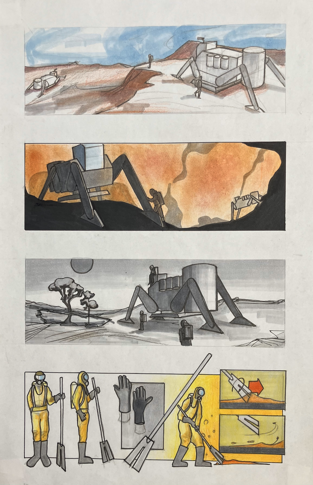
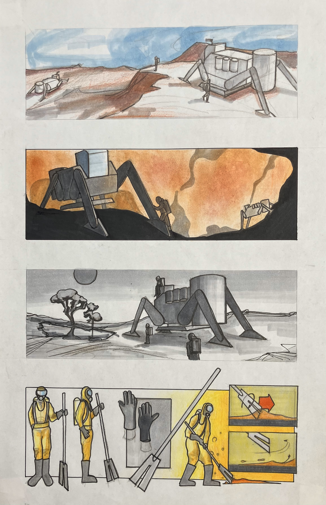

How might a cardboard device with no electronics enhance your sense of hearing?
Using cardboard, string, and tape, I prototyped and later created a final wearable device that helps you hear the sound of the wind, and also the sound of your own movement. Our senses exist for the purpose of collecting feedback, and the paper strips on my device enhance that auditory feedback, making it a device that enhances your sensing system. Users are encouraged to close their eyes and fully immerse themselves in the directions of the sounds. Featuring a collapsible design and an adjustable fit, the project was also an exercise in creating wearables for people in unique contexts.
Ideation began with sketches, and many low fidelity physical prototypes were created. A final model is made using balsa wood, cardboard, tape, and string. Because of the fragile nature of cardboard, the structure was designed to be as strong as possible, while maintaining a light weight.


Many of the machines existing in our world today mimic some kind of natural process. Inspired by the different natural processes existing within our world, I set out to gain a better understanding of the phenomenon of pollination, specifically within bees. The goal was to create a fictional machine that embodies that process.
My exploration began with flow drawings that help me understand what goes on during pollination. Most of my later sketches focus on the internal process, but I had some fun and designed the exterior as well, considering where the fictional machine might exist, and how the 'caretakers' that operate it might be dressed and equipped for the task. A physical model was also made with rapid prototyping in mind, all parts designed to be either laser cut or 3D printed.
CAD was done using SolidWorks, and the physical model was made using laser cut acrylic and 3D printed parts.


 

Exploring the relationships of image and text.
A series of poster designed for a local jazz event in Pittsburgh.
Made using Adobe InDesign and Photoshop.


This project explored the ways 2D curves can be translated into 3D, and how these forms can interact with light.
After familiarizing myself with a seashell, I carved out a 3D unit representing the shell using foam, which will later form a pattern. This was then used to create the mold. Finally, the individual plaster pieces were cast and I explored how light can manipulate the pattern.
High density foam was used for carving the initial unit used to create the mold. Silicone mold maker and plaster were used to cast the individual 36 pieces. Sandpaper was also used for a smooth finish.

Inspired by the creative and improvised material use in creating movie props, I created a chainsaw with pieces of garbage I found that showcases the interesting textures and properties of our everyday waste.
An everyday tool made of trash.
Mixed media.


Inspired by structures present in nature, especially in plants and animals, these lights explored how 3D printing fabrication processes, combination of materials, and proportions of parts can create a modern lighting piece.
This is a series lights made using different mediums and processes. Inspired by vines and a vertebrae.
The vine lamp was made with plaster cloth, and the vertebrae lamp was made with paster with additional wooden supports.